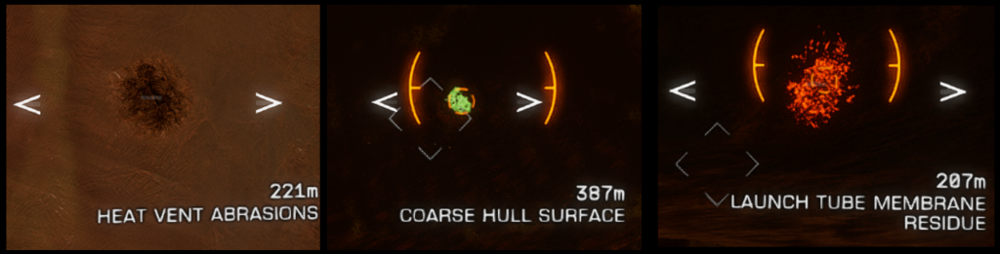

Thargoid Titans can be found at the centre of Maelstrom (details of how to get to the Titan are on the Maelstrom entry). Titans appear to be capital class ships of around 8km diameter. One study suggests the Titan Taranis is closer to 12.8km in diameter.
The area has many Caustic Mines that will trigger on heat, as well as patrolling Interceptors and Hunters. As usual with Thargoids a low heat output (less than 20% is recommended) will avoid most issues.
Various Thargoid ships can be found entering and exiting the Titan – one way to find the Titan is to follow the Thargoid Wake signals that can be seen in the ship radar display as these are often around the Titan.
The Titan features:
The Titan will change colouration depending upon whether it detects hostility – it starts off with a green colouration, and will change to amber or red depending upon it’s status.
The Titan has a torus force-field-like blue projection that appears after damaging Thargoid things around the Titan, notably, killing several interceptors, or all 25 turrets.
There are materials that can be collected from the surface of the Titan – they can be shot using weapons or, for a higher yield, using the mining Abrasion Blaster. These only appear on the contacts panel at very short range, but can often be located visually from further away.

Credits: Thanks to CMDR Mallchad, CMDR ProxyAlpha, CMDR Midnight Bagel, CMDR Battlestarcheese, CMDR Ozric, CMDR XenosAurion, wizzerktity, Xarionn